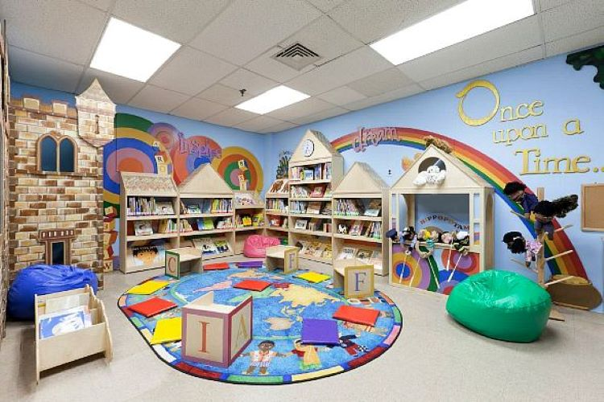

Learn While Playing
Adolescent Enjoys Their Innocence.:
In Their Innocence ,Very Young Children Know Themselves To Be Light And Love.If We Allow Them,They Can Teach Us To See Ourselves The Same Way.
Every Children Is An Artist.The Probelms Is How To Retain An Artist Once We Grow Up.
Gallery Of PlayTown
This Galery Tells About How The Childern Enjoys In Learning Diferent Things.

Keep away from people who try to belittle your ambitions. Small people always do that, but the really great make you feel that you, too, can become great.

For a small child there is no division between playing and learning; between the things he or she does just for fun and things that are educational. The child learns while living and any part of living that is enjoyable is also play.
Children more than ever, need opportunities to be in their bodies in the world – jumping rope, bicycling, stream hopping, and fort building. It’s this engagement between limbs of the body and bones of the earth where true balance and centeredness emerge.
Music education can help spark a child's imagination or ignite a lifetime of passion. When you provide a child with new worlds to explore and challenges to tackle, the possibilities are endless. Music education should not be a privilege for a lucky few, it should be a part of every child's world of possiblity.
Films offer children a source of comfort, inspiration and creativity, and play an integral role in developing a child’s imagination and empathy. Along with the narrative of a film, personalities of beloved characters also teach important life lessons, and encourage children to believe in themselves.
Holiday eating is a study in paradox. You're surrounded by food, but you're so busy shopping and cooking that you don't have time to eat. Then, when your blood sugar dips to the point of derangement, you make a desperate lunge for the closest foodstuff - and the next thing you know, you've eaten an entire box of regifted peppermint bark.
There are children playing in the streets who could solve some of my top problems in physics, because they have modes of sensory perception that I lost long ago.
Friendship is not something you learn in school. But if you haven't learned the meaning of friendship, you really haven't learned anything.
It is the duty of all papas and mammas to forbid their children to drink coffee, unless they wish to have little dried-up machines, stunted and old at the age of twenty....I once saw a man in London, in Leicester Square, who had been crippled by immoderate indulgence in coffee; he was no longer in any pain, having grown accustomed to his condition, and had cut himself down to five or six cups a day.